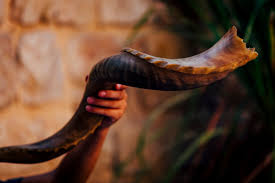
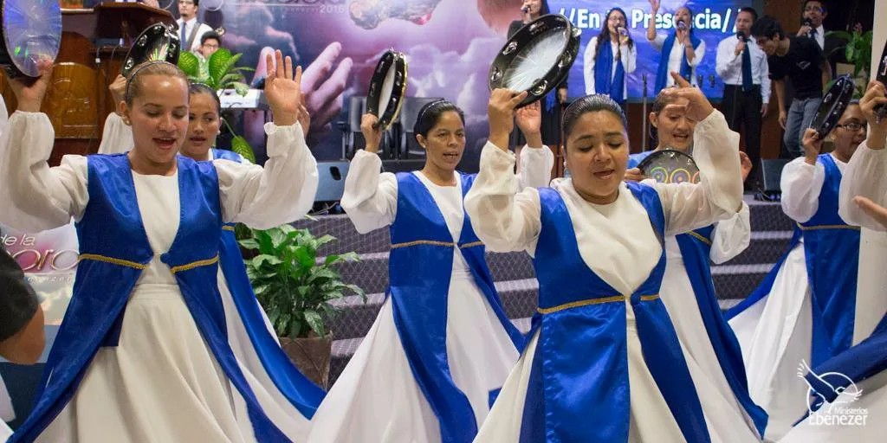
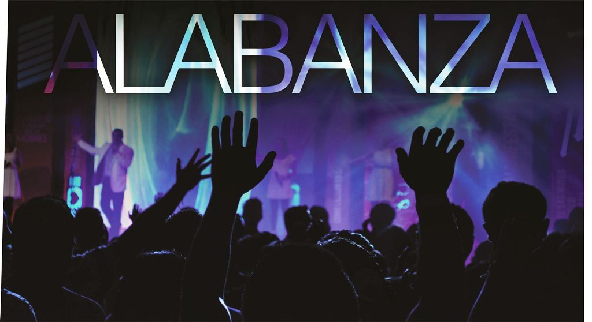

ELEMENTOS QUE SE OCUPAN
En Un Cambio Real utilizamos diferentes elementos bíblicos que nos ayudan a expresarnos, a adorar y a guerrear en el ámbito espiritual. Estos no son simples tradiciones, sino herramientas poderosas que Dios nos ha dado para acercarnos más a Él y para ministrar con efectividad. En esta sección podrás conocer el significado profundo del Shofar, las Danzas Proféticas y la Alabanza y Adoración. Cada uno de estos elementos tiene un propósito claro en nuestra congregación y está respaldado por la Palabra de Dios.
A través de ellos buscamos crear una atmósfera de gloria, romper cadenas, convocar la presencia del Señor y enseñar a los jóvenes a expresarse libremente en la presencia de Dios.
En Nuestra Congregación El shofar tiene un significado muy poderoso en nuestra congregación. Representa la voz de Dios resonando en medio de su pueblo. Así como en la antigüedad se usaba para dar advertencias, convocar asambleas o declarar victoria, hoy lo usamos para recordar que Dios aún habla con claridad y autoridad (Éxodo 19:16-19). Cuando tocamos el shofar, confundimos al enemigo y declaramos la victoria de Cristo. Su sonido rompe fortalezas espirituales y crea una atmósfera de guerra espiritual. Es una herramienta poderosa que Dios nos ha dado para confrontar las tinieblas (Josué 6:20). El shofar también sirve para convocar la ayuda del Señor y mover su corazón. En la tradición bíblica, su sonido hacía que Dios se levantara del trono de juicio y se sentara en el trono de misericordia. Además, llama al arrepentimiento y proclama la venida del Rey (Joel 2:1 y Números 10:9-10).
Citas bíblicas principales:

En Nuestra Congregación Las danzas proféticas y artísticas son una herramienta poderosa que usamos para golpear al enemigo en el mundo espiritual. A través del movimiento y la expresión corporal declaramos la victoria de Cristo y rompemos cadenas que atan a las personas. Cada paso y cada gesto es una declaración de guerra contra las tinieblas. Con las danzas expresamos una actitud de amor profundo hacia Dios. No se trata solo de arte o coreografía, sino de una ofrenda genuina donde nuestro cuerpo entero adora al Creador. Es una forma hermosa de decirle al Señor que lo amamos con todo nuestro ser (2 Samuel 6:14). Las danzas también tocan el corazón de Dios con un lenguaje no verbal. Cuando danzamos con pureza y unción, intervenimos directamente en la atmósfera espiritual. Dios se mueve cuando ve a sus hijos expresando su amor de manera libre y apasionada. En nuestra congregación creemos que las artes son un arma estratégica en la batalla espiritual.
Citas bíblicas principales

Es el acto mediante el cual exaltamos a Dios por sus proezas, por su gloria y por todo lo que ha hecho en nosotros. Es una actitud de gracias y reconocimiento por su grandeza y fidelidad. A través de la alabanza declaramos quién es Dios y lo que ha hecho en nuestras vidas. En la adoración entramos en un diálogo íntimo y profundo con Dios. Ya no solo hablamos de Él, sino que conversamos con Él de corazón a corazón. Es un momento de entrega total, gratitud y amor sincero hacia nuestro Padre celestial. Tanto la alabanza como la adoración son armas poderosas que rompen cadenas, traen la presencia de Dios y transforman ambientes. En nuestra congregación las practicamos con pasión porque creemos que Dios habita en medio de las alabanzas de su pueblo.
Citas bíblicas principales:
